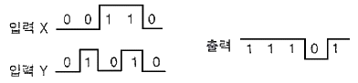
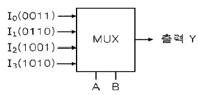
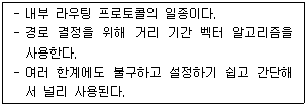
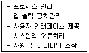
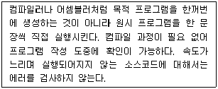
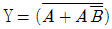
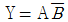
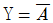
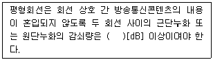

정보통신산업기사 (2017-06-10 기출문제)
1과목: 디지털전자회로
1. 다음 중 콘덴서 입력형 평활회로의 특징에 대한 설명으로 틀린 것은?
- 용량 C가 클수록 정류기(다이오드)에 흐르는 전류의 크기는 감소한다.
- 용량 C가 클수록 정류기(다이오드)에 흐르는 전류의 시간이 짧아진다.
- 정류기(다이오드)에 흐르는 전류는 펄스 파형이다.
- 용량 C가 클수록 출력전압의 맥동률은 작아진다.
(정답률: 52%)

2. 전압 안전계수가 0.1인 정전압회로의 입력전압이 ±5[v] 변화할 때 출력전압의 변화는?
- 0.01[mV]
- 1.2[mV]
- 0.2[mV]
- 0.5[mV]
(정답률: 82%)
3. 다음 중 트랜지스터 증폭회로에서 부궤환을 걸었을 때 일어나는 현상이 아닌 것은?
- 안정도가 좋아진다.
- 비직선 일그러짐이 적어진다.
- 주파수 특성이 개선된다.
- 대역폭이 감소한다.
(정답률: 75%)
4. 전압궤환증폭기에서 무궤환시 이득이 A, 궤환율이 β일 때 궤환시 전압이득은 Af=A/(1-βA)이다. βA=1 인 경우 어떤 회로로 동작한 것인가?
- 부궤환 회로이다.
- 파형정형 회로이다.
- 발진회로이다.
- 궤환회로도 아니고 발진회로도 아니다.
(정답률: 75%)
5. 전압이득이 50인 저주파 증폭기가 약 10[%] 정도의 왜율을 가지고 있다. 이를 2[%]정도로 개선하기 위하여 걸어주어야 하는 부궤환을 β는 얼마인가?
- 10
- 4
- 0.1
- 0.08
(정답률: 60%)
6. 다음 중 푸시풀(Push-Pull) 증폭기에 대한 설명으로 틀린 것은?
- 우주 고조파가 상쇄된다.
- 비직선 일그러짐이 적다.
- A급 증폭기에서만 사용된다.
- 입력신호가 없을 때 전력손실이 매우 적다.
(정답률: 71%)
7. 다음 중 발진회로의 주파수 변동원인에 해당되지 않는 것은?
- 전원전압의 변동
- 온도변화
- 부하변동
- 기생진동
(정답률: 71%)
8. 다음 중 비정현파 신호가 출력되는 발진기는?
- 멀티바이브레이터
- 빈(Wien) 브릿지형 발진기
- 콜피츠 발진기
- 수정 발진기
(정답률: 67%)
9. 변조도가 50[%]인 진폭변조 송신기에서 반송파의 평균 전력이 400[mW]일 때, 피변조파의 평균전력은?
- 400[mW]
- 450[mW]
- 500[mW]
- 549[mW]
(정답률: 71%)
10. 900[kHz]의 반송파를 5[kHz]의 신호주파수로 진폭 변조한 경우 피변조파에 나타나는 주파수 성분이 아닌 것은?
- 895[kHz]
- 900[kHz]
- 9⑤[kHz]
- 910[kHz]
(정답률: 80%)
11. 다음 중 음성 신호의 송신측 PCM(Pulse Code Modulation) 과정이 아닌 것은?
- 표본화
- 부호화
- 양자화
- 복호화
(정답률: 84%)
12. FM 변조 방식을 사용하는 경우 아날로그 정보 신호의 기본 주파수를 2[kHz], 최대 주파수 편이가 125[kHz]인 경우 Carson 법칙을 적응할 때 전송에 필요한 대역폭은?
- 127[kHz]
- 254[kHz]
- 312[kHz]
- 428[kHz]
(정답률: 70%)
13. 펄스가 최대진폭의 10[%]에서 90[%]까지 상승하는 시간은?
- 지연시간
- 선형시간
- 축적시간
- 상승시간
(정답률: 83%)
14. 다음 중 멀티바이브레이터의 단안정희로와 쌍안정회로는 어떻게 결정 되는가?
- 결합회로의 구성에 따라 결정된다.
- 출력 전압의 부궤환율에 따라 결정된다.
- 입력 전류의 크기에 따라 결정된다.
- 바이어스 전압 크기에 따라 결정된다.
(정답률: 69%)
15. 10진수 8을 3초과 코드(Excess-3 code)로 맞게 변환한 값은?
- 1000
- 1001
- 1011
- 1111
(정답률: 78%)
16. 다음 그림의 X, Y 입력에 대한 동작파형의 논리 게이트는 무엇인가?

- NAND 게이트
- AND 게이트
- OR 게이트
- NOT 게이트
(정답률: 77%)
17. JK플립플롭에서 입력 J=0, K=1 이고, 클록 펄스가 인가되면 Qt+1(입력 후의 값)의 출력상태는?
- 0
- 1
- 반전
- 부정
(정답률: 59%)
18. 다음과 같은 멀티플렉서 회로에서 제어입력 A와 B가 각각 1일 때 출력 Y의 값은?

- 0011
- 0110
- 1001
- 1010
(정답률: 69%)
19. 다음 중 M×N 디코더(Decoder)에 대한 설명으로 틀린 것은?
- AND 회로의 집합으로 구성할 수 있다.
- 2진수를 10진수로 변환하는 회로이다.
- 10진수를 BCD(Binary Coded Decimal)로 표현할 때 사용한다.
- 명령 해독이나 번지를 해독할 때 사용한다.
(정답률: 70%)
20. 디지털 IC의 정상 동작에 영향을 주지 않고 게이트 출력부에 연결할 수 있는 표준 부하의 숫자를 무엇이라고 하는가?
- 팬 아웃
- 틸트
- 잡음 허용치
- 전달 지연 시간
(정답률: 71%)
2과목: 정보통신기기
21. 단말기의 구성 중 전송제어장치의 구성요소가 아닌 것은?
- 회선접속부
- 입출력제어부
- 회선제어부
- 신호변환부
(정답률: 71%)
22. 다음 중 정보 단말기의 입·출력 장치에 속하는 것은?
- 변·복조부
- 회선 접속부
- 오류처리부
- 출력 장치부
(정답률: 71%)
23. 다음 중 ADSL방식에서 가입자의 컴퓨터가 인터넷에 접속하는 방식으로 알맞은 것은?
- IP를 자동으로 할당하는 DHCP 방식
- 별도의 PPoE(외장형 모뎀) 또는 PPPoA(내장형 모뎀) 접속 프로그램을 이용하여 인증을 통해 접속하는 방식
- NMS를 통하여 자동으로 할당하는 방식
- EMS를 통하여 고정 IP를 할당받는 방식
(정답률: 58%)
24. 다음 중 전송시스템에서 다중화(Multiplexing)란 무엇인가?
- 다중신호를 다중 통신채널에 보내는 것
- 다중신호를 하나의 통신채널에 보내는 것
- 동일신호를 다중 통신채널에 보내는 것
- 동일신호를 하나의 통신채널에 보내는 것
(정답률: 79%)
25. 비트 단위의 다중화에 사용되고, 시간 슬롯이 낭비되는 경우가 많이 발생하는 다중화는?
- 주파수 분할 다중화
- 동기식 시분할 다중화
- 비동기식 시분할 다중화
- 코드 분할 다중화
(정답률: 64%)
26. 초기 전화망은 각각의 전화기가 모두 연결된 형태로 구성되었다. 이와 같은 구성의 경우, 전화기 n개를 연결하기 위해 필요한 회선의 개수는?
- (n-1)/2
- n(n-1)/2
- (n+1)/2
- n(n+1)/2
(정답률: 84%)
27. 네트워크에서 보안을 위한 가장 일차적인 솔루션으로 신뢰하지 않은 외부 네트워크와 신뢰하는 내부 네트워크 사이를 지나는 패킷을 미리 정한 규칙에 따라 차단 또는 허용하는 것을 무엇이라 하는가?
- 방화벽
- VPN
- 침입탐지 시스템(IDS)
- DRM
(정답률: 82%)
28. 다음 중 데이터 링크 장비에 대한 설명으로 옳지 않은 것은?
- 네트워크 장비는 MAC 주소를 기반으로 작동한다.
- LAN카드 자체는 물리 계층에서 작동하지만, 드라이버를 포함하면 데이터링크 계층에서 작동한다.
- 데이터링크 계층과 관련된 장비는 리피터, 스위치, 허브가 있다.
- 브리지(Bridge)는 두 개의 근거리통신망(LAN)울 서로 연결해 주는 통신망 연결 장치이다.
(정답률: 68%)
29. 모뎀의 기능 중에서 디지털신호가 '1' 이나 '0' 이 계속되는 것을 방지하는 것은?
- 스크램블 기능
- 타이밍 기능
- 등화 기능
- 테스트 기능
(정답률: 84%)
30. 네트워크 장비인 라우터에 대한 설명으로 옳지 않은 것은?
- 네트워크 계층에서 동작한다.
- 서로 다른 네트워크 간의 연결을 위해 사용된다.
- 하나의 네트워크 세그먼트 안에서 크기를 확장한다.
- 서로 다른 VLAN 간의 통신을 가능하게 해준다.
(정답률: 72%)
31. CATV방송에서 입력측 (C/Ni)=20 이고, 출력측 (C/No)=10 이라고 가정하면 잡음지수(Noise Factor)는?
- 0.5
- 1
- 2
- 3
(정답률: 79%)
32. 다음 중 인터넷 프로토콜(IP)을 이용한 VoIP서비스의 구성요소가 아닌 것은?
- 프록시 서버(Proxy Server)
- 게이트웨이(Gateway)
- 게이트키퍼(Gate Keeper)
- 중앙제어장치(Central Controller)
(정답률: 72%)
33. 자동식 교환방식 중 광교환 방식의 종류가 아닌 것은?
- 공간분할방식
- 시간분할방식
- 파장분할방식
- 코드분할방식
(정답률: 51%)
34. 다음 중 위성통신시스템에서 지구국의 기본 구성이 아닌 것은?
- 열제어계
- 안테나계
- 인터페이스계
- 송수신계
(정답률: 70%)
35. 위성통신에서 사용하는 다원 접속방식 중 CDMA 방식의 장점이 아닌 것은?
- 가입자 수용 용량이 크다.
- 전력제어 및 동기 기술이 필요 없다.
- 간섭과 방해에 강하다.
- 다중경로 페이딩을 극복할 수 있다.
(정답률: 70%)
36. 다음 중 정지위성에 관한 설명으로 적합하지 않는 것은?
- 지표면에서 약 36,000km 상공에 위치한다.
- 저궤도 위성보다 운영비가 저가이며 전파지연시간은 크다.
- 최소한 3개 이상이 있어야 지구 전역을 커버할 수 있다.
- 주로 군사, 과학, 기상용으로 많이 사용된다.
(정답률: 71%)
37. 다음은 TRS(Trunked Radil System)에 관한 설명으로 옳지 않는 것은?
- 주로 하나의 기지국은 Cellular보다 좁은 서비스 지역(Area)을 구성한다.
- 사용자가 사용하지 않는 시간을 이용하여 다수의 가입자군이 일정 주파수 채널을 공동으로 사용한다.
- 일제통화, 선별통화, 개별통화 기능이 있다.
- 통화누설이 없고, 잡음과 혼신이 적은 양호한 통화품질을 유지한다.
(정답률: 73%)
38. 문자, 그림, 애니메이션, 동영상 등의 다양한 정보매체를 디지털 형식으로 통합하여 제공하는 것을 무엇이라고 하는가?
- 멀티미디어
- 아날로그 매체
- 모자전신매체
- 음성매체
(정답률: 90%)
39. 다음 중 위치정보와 무선통신망을 이용하여 교통안내, 긴급구난, 인터넷 등 Mobile Officemff 제공하는 것은?
- Telematics
- RFID
- CDMA
- VoIP
(정답률: 76%)
40. 스마토폰, 태블릿, 스마트TV 등과 같이 기존의 기능에 컴퓨터의 기능이 부가된 기기를 무엇이라 하는가?
- 와이브로기기
- 블루투스기기
- 유선데이터기기
- 스마트기기
(정답률: 88%)
3과목: 정보전송개론
41. 다음 중 표본화 종류가 아닌 것은?
- Instantaneous Sampling
- Flat-top Sampling
- Natural Sampling
- Time Sampling
(정답률: 62%)
42. 표본화 주파수가 10[kHz]이고 원신호 파형의 주파수가 1[kHz]라면, 1주기당 PAM신호는 몇 개인가?
- 1게
- 2개
- 5개
- 10개
(정답률: 80%)
43. 다음 중 음성의 디지털 부호가 기술 중에서 파형 부호화 방식이 아닌 것은?
- LPC
- PCM
- DPCM
- DM
(정답률: 61%)
44. 다음 중 샤논의 정리에서 채널의 통신용량을 늘리기 위한 방법으로 옳은 것은?
- 신호(S) 세력을 높인다.
- 잡음(N) 세력을 높인다.
- 대역폭(B)을 줄인다.
- C/N비(C:채널용량, N:잡음전력)를 감소시킨다.
(정답률: 67%)
45. PCM방식에서 입력신호의 최대신호가 2[kHz]인 경우, 나이퀴스트(Nyquist) 표본화 주파수(fs)와 표본화 주기(Ts)의 계산값은?
- fs=2[kHz], Ts=500[μs]
- fs=4[kHz], Ts=250[μs]
- fs=6[kHz], Ts=167[μs]
- fs=8[kHz], Ts=125[μs]
(정답률: 81%)
46. 길이 500[m] 광섬유 4개를 응착접속하여 하나의 광섬유로 사용하고자 한다. 연결한 광섬유의 총 손실의 몇 [dB]인가? (단, 광섬우의 손실 : 2[dB/km], 융착접속 손실 : 0.1[dB])
- 2.3[dB]
- 2.4[dB]
- 4.3[dB]
- 4.4[dB]
(정답률: 65%)
47. UTP 케이블을 이용하여 공장 내 통신기기를 직접 연결하고자 한다. UTP 케이블의 손실이 5[dB]일 때 케이블의 길이는? (단, UTP 케이블 감쇠 손실은 2.5[dB/km]이다.)
- 0.5[km]
- 1[km]
- 1.5[km]
- 2[km]
(정답률: 76%)
48. 다음 중 지상 마이크로파 통신시스템의 구성요소가 아닌 것은?
- 변복조 장치
- 광검출기
- 송수신 장치
- 중계 장치
(정답률: 68%)
49. 디지털 정보통신시스템이 9,600[bps]로 동작하여야 할 경우 신호요소가 4[bit]로 인코드된다면 이상적인 전송채널에서 최소 얼마의 대역폭을 지녀야 하는가?
- 1,200[Hz]
- 2,400[Hz]
- 4,800[Hz]
- 9,600[Hz]
(정답률: 82%)
50. 다음 중 공통선 신호방식(Common Channel Signaling)의 특징이 아닌 것은?
- 통화채널과 분리된 별도의 신호채널을 통해 신호가 송수신 된다.
- 축적 프로그램 제어 방식에 의해 신속한 상호 전달 능력과 망의 상태관리나 보수 과금 정보 전송도 수행할 수 있다.
- 신호망의 일부 손상이 통신망의 마비를 초래할 수 있다.
- 신호전송의 전기적 조건에 따라서 직류방식, In-Band 방식 등 으로 나눈다.
(정답률: 71%)
51. 일반적으로 비동기식 전송보다 빠르고 동기식 전송보다 느린 방식은?
- 비트 방식
- 문자 방식
- 혼합형 동기식 방식
- 비혼합형 동기식 방식
(정답률: 79%)
52. 다음 중 문자 동기 전송방식에서 SYN 문자의 기능으로 맞는 것은?
- 수신측이 문자 동기를 맞추도록 한다.
- 데이터의 완료를 표시한다.
- 데이터의 시작을 표시한다.
- 질의가 끝났음을 알린다.
(정답률: 82%)
53. 다음 중 OSI 7계층 참조모델의 각 계층별 설명으로 잘못된 것은?
- 제2계층(물리 계층) : 물리적 연결, 활성화와 비활성화
- 제3계층(네트워크 계층) : 통신망 내 및 통신망 사이의 경로 선택과 중계 기능
- 제4계층(트랜스포트 계층) : 종단 상호간의 에러검출 및 서비스 품질 감시
- 제5계층(세션 계층) : 회화 관리 및 동기 기능 수행
(정답률: 79%)
54. OSI 모델의 7계층 중 암호화 및 데이터 압축 등을 수행하는 계층은?
- 응용 계층
- 표현 계층
- 전송 계층
- 세션 계층
(정답률: 73%)
55. 다음에서 설명하는 라우팅 프로토콜은 무엇인가?

- RIP(Routing Information Protocol)
- IGRP(Interior Gateway Routing Protocol)
- OSPF(Open Shortest Path First)
- BGP(Border Gateway Protocol)
(정답률: 70%)
56. 전송제어 프로토콜(TCP)에서 오류제어를 위해 사용하는 방식은?
- 패리티(Parity)
- CRC
- Checksum
- Blocksum
(정답률: 53%)
57. 물리적으로 동일한 네트워크에 연결되어 있지만 논리적으로 새로운 그룹을 만들어서 각각의 그룹 내에서만 통신이 가능 하도록 구성되어 있는 것을 무엇이라 하는가?
- GSM
- VLAN
- GPRS
- DECT
(정답률: 80%)
58. 인터넷 프로토콜을 대표하는 TCP와 IP를 각각 OSI 7Layer의 RM(Reference Modal)에 대응시키면 어떤 Layer에 해당되는가?
- L4/L3
- L7/L3
- L4/L2
- L4/L1
(정답률: 76%)
59. 다음 중 패리티검사 방법에서 에러의 발생을 검출할 수 없는 경우는 몇 개의 오류가 동시에 발생할 경우인가?
- 4개
- 3개
- 5개
- 1개
(정답률: 62%)
60. 통신방식에 의한 분류 중 양방향으로 송신이 가능하지만 동시에 송신이 불가능한 방식은?
- 단방향 전송방식
- 반이중 전송방식
- 전이중 전송방식
- 병렬 전송방식
(정답률: 81%)
4과목: 전자계산기일반 및 정보설비기준
61. 다음 중 EEPROM(Electrically Erasable Programmable Read Only Memory)과 정적메모리(SRAM)의 2가지 결합 특성을 가지고 있는 것은?
- NVRAM(Non-Volatile Random Access Memmory)
- EPLD(Electrically Programmable Logic Device)
- DRAM(Dynamic Random Access Memory)
- OTP(One Time Programmable)
(정답률: 70%)
62. 다음 중 입·출력 겸용장치에 해당하지 않는 것은?
- 자기디스크
- 콘솔(Console)
- OCR(Optical Character Reader)
- 자기 테이프
(정답률: 67%)
63. 16진수 3B7F를 2진수로 바르게 변환된 것은?
- 0011 1000 1110 1111
- 1111 1011 0111 0011
- 1111 0111 1011 0011
- 0011 1011 0111 1111
(정답률: 74%)
64. 다음 중 오류 검출용 코드에 해당하는 코드는?
- BCD 코드
- Execess-3 코드
- 해밍 코드
- Gray 코드
(정답률: 83%)
65. 다음 보기와 같은 기능을 수행하는 것은?

- 하드웨어
- 운영체제
- 응용 프로그램
- 미들웨어
(정답률: 84%)
66. 다음 운영체제의 프로세스 관리기능 중 교착상태의 발생 조건에 대한 설명으로 옳은 것은?
- 상호배제 : 한 개 의 프로세스만이 공유자원을 사용할 수 있어야 한다.
- 점유와 대기 : 공유자원과 자원을 사용하기 위해 대기하고 있는 프로세스들이 원형으로 구성되어, 자신의 할당자원 외에 앞이나 뒤에 프로세스의 자원을 요구해야 한다.
- 비 선점 : 하나의 자원을 점유하였으면 다른 프로세스에 할당되어 사용되고 있는 자원을 추가적으로 점유하기 위해 대기하는 프로세스가 있어야 한다.
- 환형대기 : 다른 프로세스에 할당된 자원은 사용이 끝날 때까지 강제로 빼앗을 수 없어야 한다.
(정답률: 50%)
67. 다음 중 C 언어의 변수에 대한 설명으로 틀린 것은?
- 변수는 값을 저장하는 기억장소의 주소, 길이, 타입의 세 가지 속성을 지닌다.
- 변수 이름은 영어 알파벳 문자나 밑줄 문자(_)로 시작해야 한다.
- 변수 이름의 영문 대문자와 소문자는 서로 구별되지 않는다.
- C 언어의 키워드는 변수 이름으로 사용될 수 없다.
(정답률: 82%)
68. 다음은 어떤 프로그래밍 번역기에 대한 설명인가?

- Translator
- Linking Loader
- Generator
- Interpreter
(정답률: 67%)
69. 다음 중 마이크로프로세서가 수행하기 위한 명령어와 데이터는 어디에 존재하여야 하는 가?
- 메인 메모리
- CD-ROM
- HDD
- Floppy Disk
(정답률: 72%)
70. 논리식

를 간략화하면?

- Y = 1
- Y = AB
(정답률: 66%)
71. 공사에 관한 계획서, 설계도면, 시방서, 공사비명세서, 기술계산서 및 이와 관련된 서류를 작성하는 행위를 무엇이라 하는가? (단, 건축사법에 따른 건축물의 건축 등의 공사는 제외한다.)
- 감리
- 설계
- 용역
- 공사
(정답률: 77%)
72. 다음 중 미래창조과학부장관이 전기통신기본계획을 수립함에 있어서 미리 관계 행정기관의 장과 협의하여야 하는 사항으로 옳은 것은?
- 전기통신의 이용 효율화에 관한 사항
- 전기통신의 질서유지에 관한 사항
- 전기통신설비에 관한 사항
- 전기통신사업에 관한 사항
(정답률: 62%)
73. 다음 중 방송통신기자재 등에 대한 적합성평가를 전부 또는 일부가 면제되는 경우가 아닌 것은?
- 시험·연구, 기술개발 등 사용목적이 한정되는 기자재를 제조하거나 수입하는 경우
- 국내에서 판매하지 아니하고 수출 전용으로 제조하는 경우
- 전시회, 경기대회 등 행사에 사용하기 위한 것으로서 판매를 목적으로 하는 경우
- 잠정인증을 요청하는 사람이 해당 기자재에 대하여 지정시험기관의 시험결과를 제출하는 경우
(정답률: 70%)
74. 방송통신설비가 다른 사람의 방송통신설비와 접속되는 경우, 그 건설과 보전에 관한 책임 등의 한계를 명확히 하기 위해 설정하는 것은 무엇인가?
- 절분기
- 분계점
- 접속점
- 분배기
(정답률: 81%)
75. 정보통신의 표준 제정, 보급 및 정보통신 기술 지원 등 표준화에 관한 업무를 효율적으로 추진하기 위하여 설립한 법인은?
- 한국정보통신기술협회
- 정보통신정책심의위원회
- 한국정보통신진흥협회
- 한국정보통신산업협회
(정답률: 66%)
76. 모든 이용자가 언제 어디서나 적절한 요금으로 제공받을 수 있는 기본적인 전기통신 역무를 무엇이라 하는가?
- 부가적 역무
- 특정적 역무
- 보편적 역무
- 공공적 역무
(정답률: 80%)
77. 공사업자가 설계도서 및 관련 규정에 따라 공사를 적합하지 않게 시공하는 경우 감리원이 어떠한 조치를 내릴 수 있는가?
- 공사 발주자에게 공사 도급을 파기하도록 할 수 있다.
- 공사 발주자에게 공사업자로 하여금 설계변경 요구를 하도록 할 수 있다.
- 공사 발주자의 동의를 얻어 공사중지명령을 할 수 있다.
- 공사 발주자의 동의를 얻어 공사업자를 교체할 수 있다.
(정답률: 77%)
78. 교환설비나 전송설비, 전산설비 등이 설치되는 장소를 무엇이라 하는가?
- 전화국
- 통신기계실
- 옥외통신실
- 무선국
(정답률: 78%)
79. 일반적으로 부가통신사업을 경영하고자 할 때 취해야 할 행정절차는?(관련 규정 개정전 문제로 여기서는 기존 정답인 1번을 누르면 정답 처리됩니다. 자세한 내용은 해설을 참고하세요.)
- 미래창조과학부장관에게 신고하여야 한다.
- 미래창조과학부장관에게 등록하여야 한다.
- 미래창조과학부장관에게 승인을 받아야 한다.
- 미래창조과학부장관에게 허가를 얻어야 한다.
(정답률: 78%)
80. 다음은 누화에 관한 규정이다. 괄호 안에 적합한 것은?

- 48
- 56
- 68
- 76
(정답률: 81%)
용량 C가 클수록 정류기(다이오드)에 흐르는 전류의 크기는 감소합니다. 이는 콘덴서가 충전되는 시간이 더 오래 걸리기 때문입니다. 따라서 콘덴서의 용량이 클수록 정류기에 흐르는 전류의 크기는 작아집니다.
또한, 용량 C가 클수록 정류기에 흐르는 전류의 시간이 짧아지기 때문에 출력전압의 맥동률은 작아집니다. 이는 콘덴서가 충전되는 시간이 더 짧아지기 때문입니다.